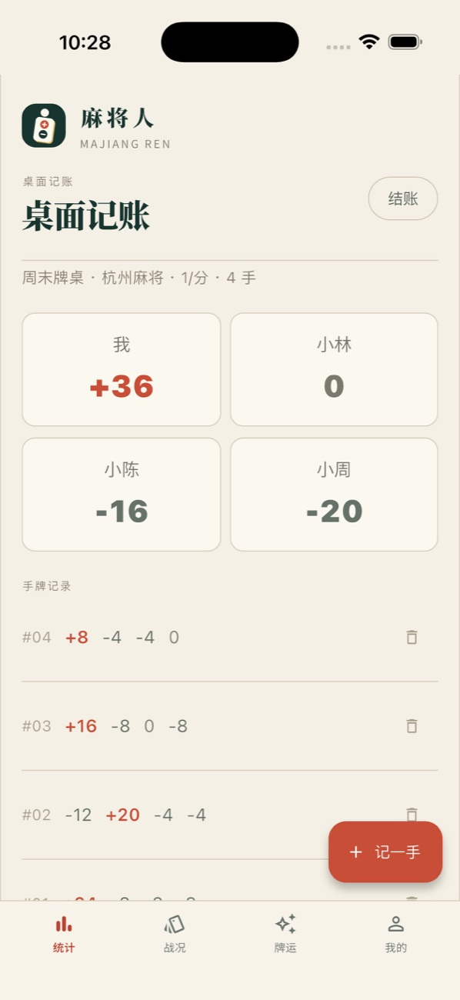

开一桌，记好每一手
添加牌友与对局信息，牌局进行中手动录入每手得分，把这一桌的累计分数放在一起核对。
给真实牌桌的一本随身记分簿
牌桌上尽兴，细节留给记录。逐手记分，整理常一起打牌的人，再回头看看那些值得记住的牌局。
iPhone · iPad

App 实际界面 · 示例记录
THE SCOREBOOK
添加牌友与对局信息，牌局进行中手动录入每手得分，把这一桌的累计分数放在一起核对。
记录已结束的牌局，留下日期、场地、牌友、座位和玩法，也把常见的牌友与常去的地方整理好。
按日、周、月、年回顾累计得分、胜率和走势，让每一条记录都有可回看的位置。
App 实际界面 · 示例记录
看看 APP 里的样子
温润、清晰的界面，陪你在牌桌上记分，也陪你在散场后回顾。截图中的数据为示例记录。
无需注册，牌局记录保存在本机。可以复制为 CSV 文本，放进自己的表格整理或留作备份。
MAHJONG PEOPLE PLUS
可选 Plus 提供进阶分析、年度报告和牌桌主题。具体功能与购买选项以 App 内展示为准。
可以。既能补录已结束的牌局，也可以创建新对局，在打牌过程中逐手手动记录分数。
分数需要手动输入。麻将人是为线下牌局准备的个人记分工具，记录保存在本机，无账号与云同步；需要备份时，可自行复制 CSV 文本保存。